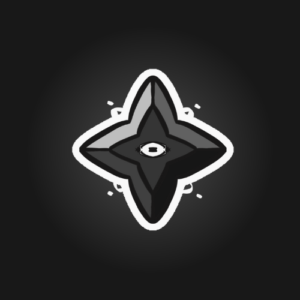

Anacrusa
Es un videojuego 2D de plataformas con enfoque narrativo, protagonizado por Sol, una entidad que solo existe mientras es interpretada. Tras nacer de una caja musical estropeada, Sol debe emprender un viaje para sobrevivir, enfrentándose a notas musicales corrompidas.

Only Bounce
Only Bounce es un juego móvil casual de desplazamiento infinito en el que el jugador controla una pequeña pelota cuyo objetivo es seguir saltando entre plataformas sin caer ni morir en el intento. Cada plataforma tocada incrementa el puntaje, incentivando partidas rápidas enfocadas en la mejora constante y la competencia.